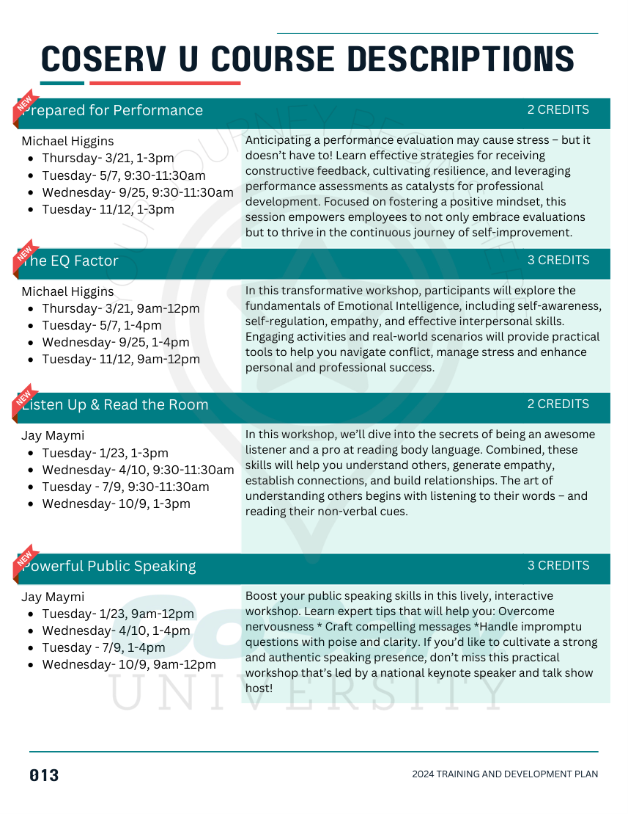
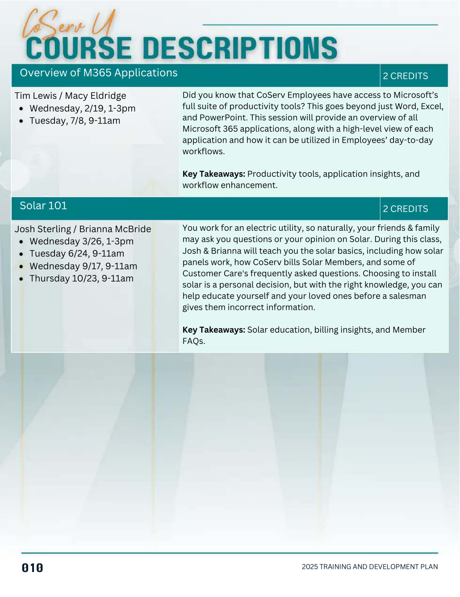
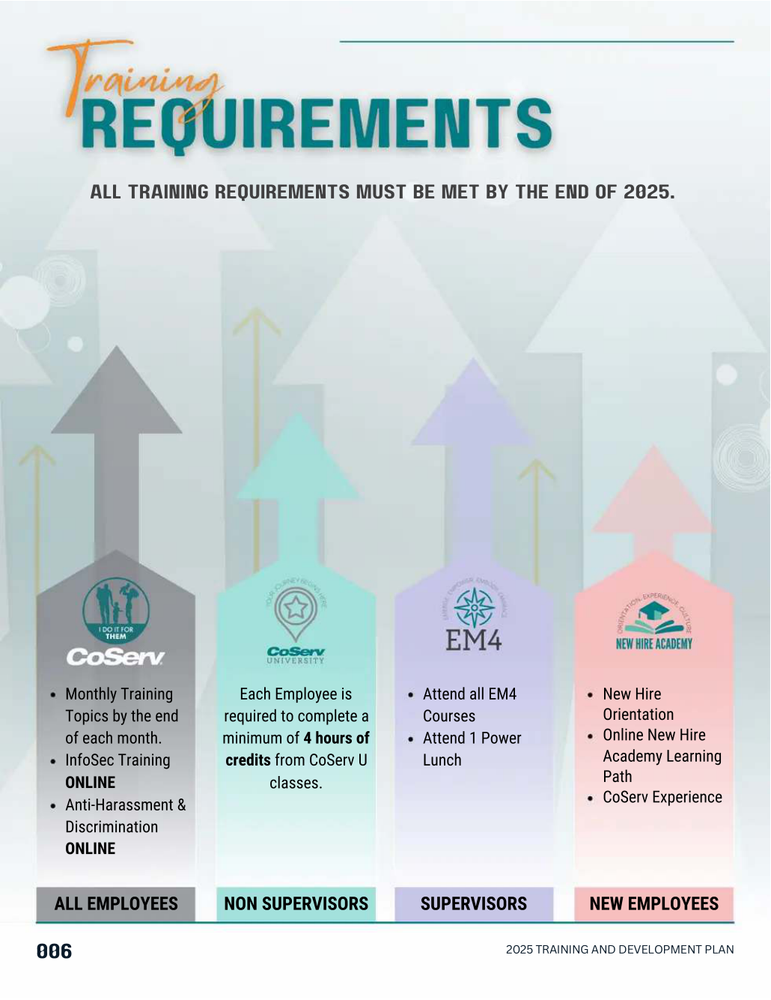
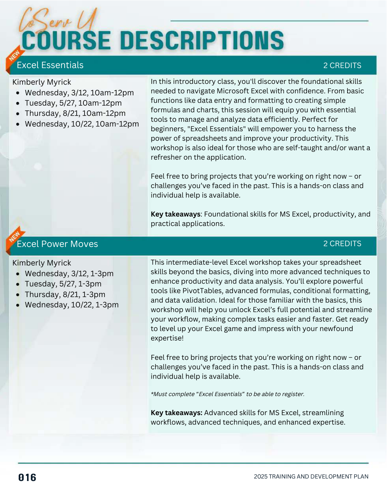
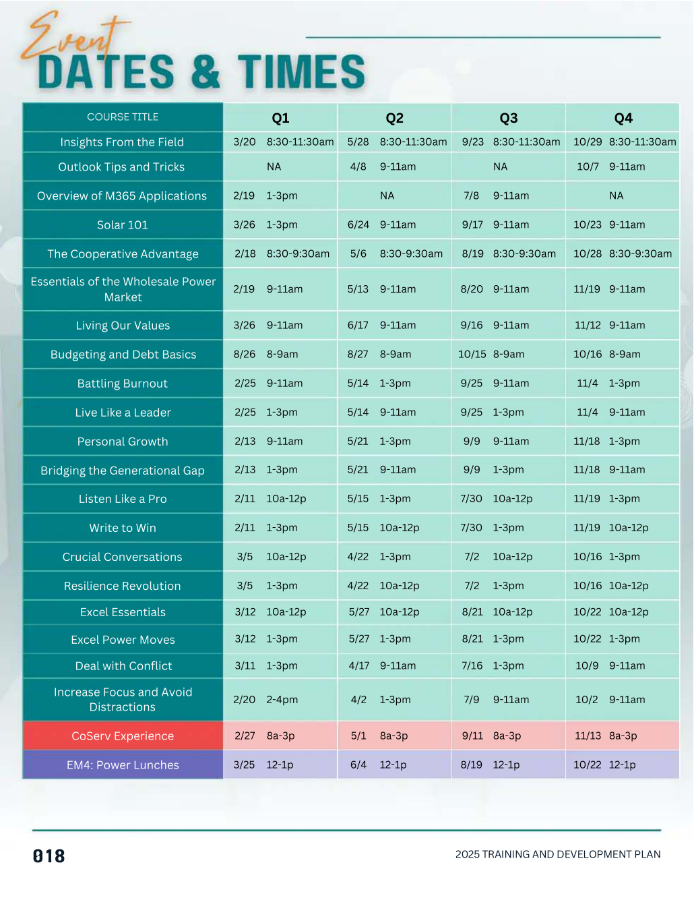

Designing Learning Around the Learner.
Reimagining an annual training catalog as something more useful than a list of courses: a resource that helps people understand what matters to them and where to go next.
Completion isn't the same as learning.
Someone can finish a course, pass an assessment, and still walk away without anything they can use.
I've always approached learning with that distinction in mind. People bring different experiences, competencies, responsibilities, and levels of familiarity to the same material. What feels obvious to one person might be entirely new to another.
My goal isn't to make everyone conform to one experience just so we can check a box. It's to make the content easier to connect with, understand, and apply. That philosophy shaped how I approached CoServ's 2025 Training and Development Plan.
The information was there. The experience could be better.
CoServ already had an established training program and a comprehensive annual catalog. I wasn't inventing the program or starting from an empty page.
What interested me was the work employees had to do to find what applied to them, understand why a course might matter, and decide what to take next. The catalog was an important reference. I wanted it to feel more like a resource for the person using it.
- What applies to me?
- What could I learn?
- Why would it matter?
- When can I take it?
- What can I do with it?
A shift in how information is presented.
The previous catalog already included course descriptions, schedules, and development opportunities. The redesign was about organizing that material so employees could scan it, orient themselves, and make choices with less effort.


Consistent placement of titles, dates, credits, and descriptions helps people learn how to use the catalog.
Key takeaways give employees a quick sense of what they might gain before reading every detail.
Requirements, individual course pages, and a consolidated schedule serve different questions and decisions.
Make the next decision easier.
I wasn't trying to make the catalog shorter at any cost. I was trying to make the information easier to act on.

Start with who needs what.
The requirements page separates all employees, non-supervisors, supervisors, and new employees. Different roles have different obligations. Making those distinctions visible reduces the need to interpret the entire program first.

Explain the value, not just the title.
Course descriptions include key takeaways alongside the logistical details. For example, the Excel courses distinguish foundational from intermediate skills and identify a prerequisite. That helps someone judge fit before committing their time.

Give people another route to the answer.
Not everyone approaches a catalog by browsing courses. Some already know what they want and just need a date. The quarterly schedule makes that question easier to answer in one place.
Good ideas still have constraints.
My initial concept went further into management and leadership development. Some of that content was removed from the published version because those offerings weren't available to everyone. I adjusted the work to reflect the direction I was given.
That's part of designing within an organization. You have to account for stakeholder decisions, program boundaries, and the reality of what can be delivered. The final artifact reflects both my design approach and those constraints.
The job isn't just to have a good idea. It's to make the best useful thing you can within the environment you're actually working in.
The finished 2025 catalog.
Browse the published Training and Development Plan here, or open the full PDF. The page viewer is an accessible visual preview; the PDF preserves the original document.
What I'd keep. What I'd change.
I still see opportunities to improve the experience: clearer navigation by audience and interest, less repetition, better digital accessibility, and more explicit pathways connecting individual courses to longer-term development.
I also wouldn't call this redesign a success based on completion numbers alone. To evaluate its effectiveness, I'd want to understand whether employees could find relevant opportunities, whether the catalog helped them make informed choices, and whether the learning eventually made a difference in their work. I don't have evidence here to claim those outcomes.
What this project demonstrates is the question that continues to shape my work:
How much work are we making the employee do just to understand what we're offering?